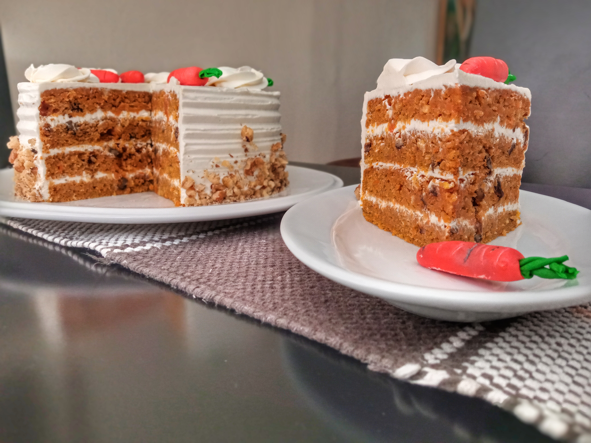

Pastel de zanahoria

Descripción
Aquí hay un pastel de zanahoria a la antigua que tiene más zanahorias que especias. Las pecanas se pueden sustituir por nueces.
Ingredientes
- 2 tazas de azúcar blanca
- ¾ taza de aceite vegetal
- 3 huevos
- 1 cucharadita de extracto de vainilla
- ¾ taza de suero de leche
- 2 tazas de zanahorias ralladas
- 1 taza de coco rallado
- 1 lata (15 onzas) de piña triturada, escurrida
- 2 tazas de harina para todo uso
- 2 cucharaditas de bicarbonato de sodio
- 2 cucharaditas de canela molida
- 1½ cucharaditas de sal
- 1 taza de nueces picadas
- ½ taza de mantequilla
- 1 paquete (8 onzas) de queso crema
- 1 cucharadita de extracto de vainilla
- 4 tazas de azúcar glas
Pasos a seguir
- Precaliente el horno a 350 grados F (175 grados C). Engrase un molde para hornear de 9x13 pulgadas. Dejar de lado.
- En un tazón grande, mezcle el azúcar, el aceite, los huevos, la vainilla y el suero de leche. Agregue las zanahorias, el coco, la vainilla y la piña. En un recipiente aparte, combine la harina, el bicarbonato de sodio, la canela y la sal; revuelva suavemente en la mezcla de zanahoria. Agregue las nueces picadas. Extienda la masa en el molde preparado.
- Hornea por 55 minutos o hasta que al insertar un palillo en el pastel, éste salga limpio. Retire del horno y deje enfriar.
- En un tazón mediano, combine la mantequilla o margarina, el queso crema, la vainilla y el azúcar glas. Mezcle hasta que quede cremoso. Escarcha el pastel mientras aún está en la sartén.